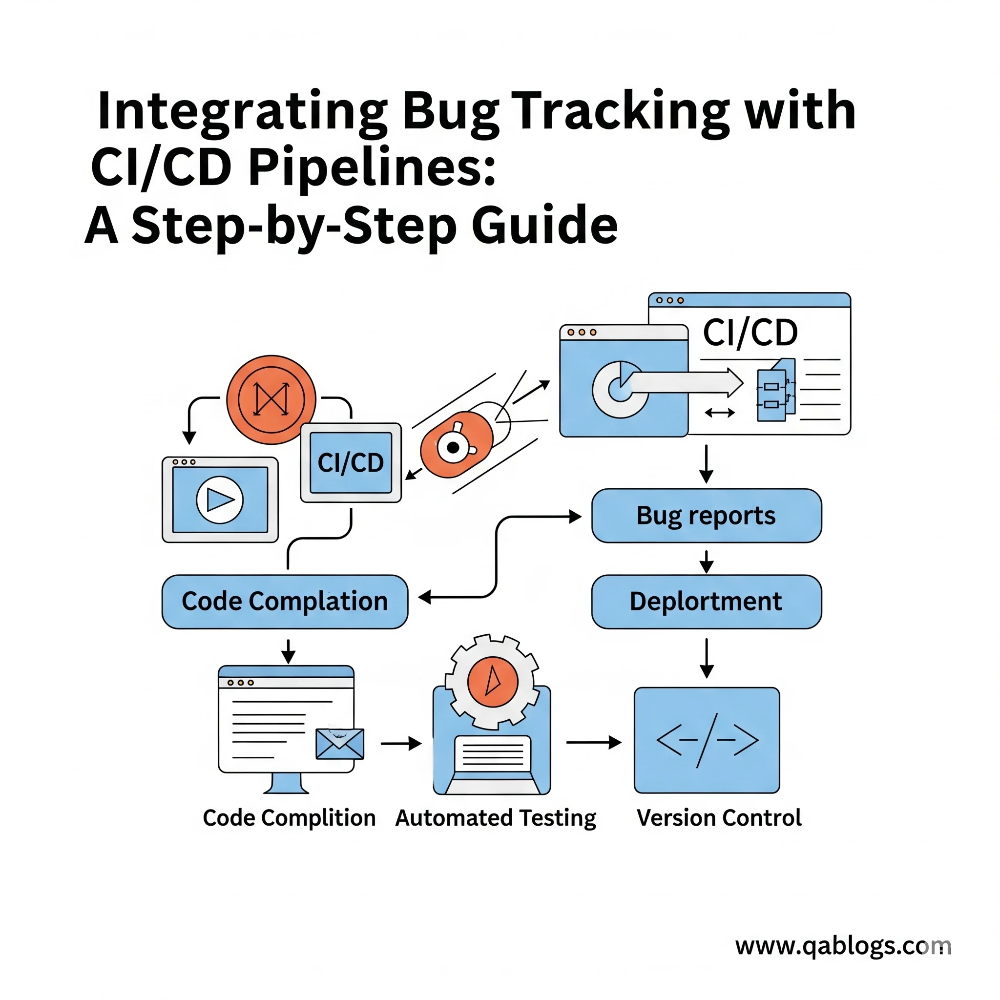

Integrating Bug Tracking with CI/CD Pipelines: A Step-by-Step Guide

In today's fast-paced software development landscape, the ability to identify, track, and resolve bugs quickly can make the difference between a successful product launch and a costly disaster. Consider this: studies show that fixing a bug in production costs 100 times more than catching it during the development phase. Yet, many organizations still operate with disconnected bug tracking systems and CI/CD pipelines, creating blind spots that allow critical issues to slip through the cracks.
The integration of bug tracking with Continuous Integration/Continuous Deployment (CI/CD) pipelines represents a paradigm shift in how QA teams approach quality assurance. This integration transforms reactive bug hunting into proactive quality gates, ensuring that every code change is automatically scrutinized and tracked from commit to deployment.
Understanding the Foundation: Bug Tracking and CI/CD Fundamentals
What is Bug Tracking Integration?
Bug tracking integration within CI/CD pipelines refers to the automated process of creating, updating, and managing bug reports as part of your continuous integration and deployment workflow. Rather than manually discovering and reporting bugs after deployment, this approach embeds quality checks directly into your development pipeline, creating automatic feedback loops that catch issues before they reach production.
The Cost of Disconnected Systems
When bug tracking systems operate in isolation from CI/CD pipelines, organizations face several critical challenges:
- Delayed Bug Discovery: Issues are often discovered days or weeks after the problematic code was committed
- Manual Overhead: QA teams spend valuable time manually creating and updating bug reports
- Inconsistent Tracking: Different team members may use varying formats and processes for bug reporting
- Lost Context: By the time bugs are reported, developers may have moved on to other features, making fixes more time-consuming
According to IBM's System Science Institute, the cost of fixing bugs increases exponentially through the software development lifecycle. A bug that costs $1 to fix during development can cost $5 during testing, $10 during integration, and $100 or more in production.
The Strategic Value of Integration
Automated Quality Gates
Integrating bug tracking with CI/CD pipelines creates automated quality gates that prevent defective code from progressing through your deployment pipeline. These gates can automatically:
- Run comprehensive test suites on every commit
- Generate detailed bug reports when tests fail
- Block deployments when critical issues are detected
- Notify relevant stakeholders immediately when problems arise
Enhanced Traceability
Modern software development involves complex interdependencies between features, libraries, and services. Integrated bug tracking provides complete traceability from code commit to bug resolution, enabling teams to:
- Identify which specific code changes introduced bugs
- Track the impact of fixes across multiple environments
- Maintain audit trails for compliance and retrospective analysis
- Correlate bug patterns with deployment frequency and team velocity
Step-by-Step Implementation Guide
Step 1: Choose Your Integration Architecture
Before implementing bug tracking integration, you need to decide on your architecture approach. There are three primary patterns:
- Push-Based Integration: Your CI/CD pipeline pushes bug information to your tracking system
- Pull-Based Integration: Your bug tracking system pulls information from CI/CD tools
- Bidirectional Integration: Both systems communicate in real-time, creating a unified workflow
Most organizations benefit from bidirectional integration, which provides the most comprehensive view of code quality and bug resolution progress.
Step 2: Select Compatible Tools
The success of your integration depends heavily on choosing tools that work well together. Here are proven combinations:
- Enterprise Stack:
CI/CD: Jenkins, GitLab CI, or Azure DevOps
Bug Tracking: Jira, Azure DevOps Work Items, or ServiceNow
Integration: Native plugins or REST APIs - Open Source Stack:
CI/CD: GitHub Actions, GitLab CI, or Jenkins
Bug Tracking: Bugzilla, MantisBT, or Redmine
Integration: Webhooks and custom scripts - Cloud-Native Stack:
CI/CD: AWS CodePipeline, Google Cloud Build, or CircleCI
Bug Tracking: Linear, Asana, or integrated solutions
Integration: Native integrations or third-party connectors
Step 3: Configure Automated Test Execution
The foundation of effective bug tracking integration is comprehensive automated testing. Configure your CI/CD pipeline to execute multiple test types:
- Unit Tests: Run on every commit to catch basic functionality issues
- Integration Tests: Verify that different components work together correctly
- End-to-End Tests: Validate complete user workflows
- Performance Tests: Identify performance regressions
- Security Tests: Detect security vulnerabilities
Each test type should be configured to generate structured output that can be automatically parsed and converted into bug reports.
Step 4: Implement Automated Bug Creation
Configure your pipeline to automatically create bug reports when tests fail. A well-configured automated bug creation system should include:
- Detailed Context: Include commit hash, branch information, and environment details
- Reproducible Steps: Automatically generate steps to reproduce the issue
- Severity Classification: Use predefined rules to assign appropriate severity levels
- Assignment Logic: Automatically assign bugs to the appropriate team members based on code ownership
Step 5: Set Up Status Synchronization
Implement bidirectional status synchronization between your CI/CD pipeline and bug tracking system. This ensures that:
- When a bug is marked as "Fixed" in your tracking system, the pipeline can automatically trigger regression tests
- When regression tests pass, the bug status can be automatically updated to "Verified"
- When tests fail, bugs can be automatically reopened with updated failure information
Step 6: Configure Deployment Gates
Implement deployment gates that prevent releases when critical bugs are open. Configure rules such as:
- Block production deployments when any "Critical" or "Blocker" bugs are open
- Require explicit approval for deployments with open "Major" bugs
- Allow automatic deployments when only "Minor" or "Trivial" bugs remain open
Real-World Implementation Examples
Case Study: E-commerce Platform Integration
A major e-commerce platform implemented bug tracking integration and achieved remarkable results:
- Before Integration:
Average bug detection time: 3-5 days after deployment
Time to fix: 2-3 weeks per bug
Production incidents: 15-20 per month - After Integration:
Average bug detection time: 15 minutes (during CI/CD execution)
Time to fix: 3-5 days per bug
Production incidents: 3-5 per month
The key to their success was implementing comprehensive automated testing at every stage of their pipeline, with automatic bug creation for any test failure. They used Jenkins with Jira integration, creating detailed bug reports that included test execution videos and environment snapshots.
Case Study: Financial Services Compliance
A financial services company needed to maintain strict audit trails for all software changes. Their implementation included:
- Automated Documentation: Every bug automatically included links to related code changes, test results, and deployment logs
- Compliance Reporting: Automated generation of compliance reports showing all bugs found and resolved during each release cycle
- Risk Assessment: Automatic risk scoring based on bug severity and affected system components
This approach reduced their compliance reporting time from weeks to hours while significantly improving their audit readiness.
Tool Comparison and Selection Guide
Jira + Jenkins Integration
Strengths:
- Mature ecosystem with extensive plugin support
- Powerful workflow customization
- Excellent reporting and analytics capabilities
- Strong enterprise features
Weaknesses:
- Can be complex to configure initially
- Licensing costs for large teams
- Performance issues with very large datasets
Best For: Enterprise teams with complex workflows and compliance requirements
Azure DevOps Integration
Strengths:
- Seamless integration between CI/CD and work item tracking
- Excellent Microsoft ecosystem integration
- Built-in analytics and reporting
- Competitive pricing
Weaknesses:
- Limited third-party integrations
- Less flexible than dedicated tools
- Primarily focused on Microsoft technologies
Best For: Microsoft-centric organizations wanting unified tooling
GitHub Actions + GitHub Issues
Strengths:
- Simple setup and configuration
- Excellent for open-source projects
- Strong community support
- Integrated with code repositories
Weaknesses:
- Limited advanced workflow features
- Basic reporting capabilities
- Less suitable for complex enterprise needs
Best For: Small to medium teams, open-source projects, and GitHub-centric workflows
Advanced Integration Patterns
Intelligent Bug Triaging
Implement machine learning algorithms to automatically classify and prioritize bugs based on:
- Historical bug resolution patterns
- Code change impact analysis
- Customer impact assessment
- Resource availability and team capacity
Predictive Quality Analysis
Use historical data to predict potential bug hotspots:
- Identify code areas with high bug density
- Predict the likelihood of bugs based on code complexity metrics
- Recommend additional testing for high-risk changes
- Optimize test coverage based on bug probability
Cross-Environment Tracking
Implement comprehensive tracking across all environments:
- Automatically promote bug fixes through environment stages
- Track bug resolution across development, staging, and production
- Maintain environment-specific bug status
- Coordinate deployments based on cross-environment bug status
Best Practices for Success
Establish Clear Ownership
Define clear ownership for different aspects of the integration:
- Development Team: Responsible for writing testable code and fixing bugs
- QA Team: Responsible for test case creation and bug verification
- DevOps Team: Responsible for pipeline configuration and tool integration
- Product Team: Responsible for bug prioritization and acceptance criteria
Implement Gradual Rollout
Start with a pilot project to validate your integration approach:
- Phase 1: Implement basic automated bug creation for critical test failures
- Phase 2: Add status synchronization and deployment gates
- Phase 3: Implement advanced features like intelligent triaging and predictive analysis
- Phase 4: Expand to all projects and teams
Monitor and Optimize
Continuously monitor your integration performance:
- Track bug detection and resolution times
- Measure deployment frequency and success rates
- Analyze false positive rates for automated bug creation
- Gather feedback from development and QA teams
Common Pitfalls and How to Avoid Them
Over-Automation
While automation is valuable, avoid creating noise with too many automated bug reports. Implement filters and thresholds to ensure that only actionable bugs are automatically created.
Insufficient Test Coverage
Bug tracking integration is only as effective as your test coverage. Invest in comprehensive test suites that cover critical functionality, edge cases, and regression scenarios.
Ignoring Team Workflow
Don't force teams to change their established workflows dramatically. Instead, design your integration to enhance existing processes rather than replace them entirely.
Lack of Customization
Every organization has unique requirements. Avoid one-size-fits-all solutions and invest time in customizing your integration to match your specific needs.
Future Trends and Emerging Technologies
AI-Powered Bug Detection
Artificial intelligence is revolutionizing bug detection with capabilities such as:
- Semantic Code Analysis: Understanding code intent beyond syntax
- Anomaly Detection: Identifying unusual patterns in application behavior
- Natural Language Processing: Analyzing user feedback and support tickets for bug insights
- Predictive Modeling: Forecasting bug occurrence based on code changes
Shift-Left Security Integration
Security testing integration is becoming increasingly important:
- Static Application Security Testing (SAST): Analyzing code for security vulnerabilities
- Dynamic Application Security Testing (DAST): Testing running applications for security issues
- Interactive Application Security Testing (IAST): Combining static and dynamic analysis
- Software Composition Analysis (SCA): Identifying vulnerabilities in third-party dependencies
Container and Microservices Considerations
Modern architectures present unique challenges:
- Distributed Tracing: Tracking bugs across multiple microservices
- Container Security: Scanning container images for vulnerabilities
- Service Mesh Integration: Leveraging service mesh data for bug detection
- Chaos Engineering: Proactively introducing failures to identify weaknesses
Measuring Success: Key Metrics and KPIs
Bug Detection Metrics
- Mean Time to Detection (MTTD): Average time from bug introduction to discovery
- Detection Rate: Percentage of bugs caught by automated systems vs. manual testing
- False Positive Rate: Percentage of automated bug reports that are not actual bugs
- Test Coverage: Percentage of code covered by automated tests
Bug Resolution Metrics
- Mean Time to Resolution (MTTR): Average time from bug discovery to fix deployment
- First-Time Fix Rate: Percentage of bugs fixed correctly on the first attempt
- Regression Rate: Percentage of bugs that reoccur after being marked as fixed
- Customer-Reported Bugs: Number of bugs discovered by customers vs. internal processes
Pipeline Performance Metrics
- Deployment Frequency: How often code is deployed to production
- Lead Time: Time from code commit to production deployment
- Pipeline Success Rate: Percentage of pipeline executions that complete successfully
- Rollback Rate: Percentage of deployments that require rollback due to bugs
Conclusion: Building a Culture of Quality
Integrating bug tracking with CI/CD pipelines is more than a technical implementation—it's a cultural transformation that elevates quality from an afterthought to a fundamental aspect of software development. Organizations that successfully implement this integration report not only fewer production bugs but also increased developer confidence, faster delivery cycles, and improved customer satisfaction.
The key to success lies in starting small, measuring results, and continuously improving your approach. Begin with basic automated bug creation, then gradually add more sophisticated features as your team becomes comfortable with the new workflow.
As software development continues to evolve toward more frequent releases and complex architectures, the integration of bug tracking with CI/CD pipelines will become increasingly essential. Organizations that invest in this integration today will be better positioned to deliver high-quality software at scale tomorrow.
Ready to transform your quality assurance process? Start by auditing your current bug tracking and CI/CD processes, identify integration opportunities, and select the pilot project that will demonstrate the most value to your organization. Remember, the goal isn't perfection from day one—it's continuous improvement toward a more efficient, reliable, and quality-focused development lifecycle.
The future of software quality depends on proactive, automated, and integrated approaches to bug tracking. By implementing these strategies today, you're not just fixing bugs—you're building the foundation for exceptional software that delights users and drives business success.
Join Our Community of QA Professionals
Get exclusive access to in-depth articles, testing strategies, and industry insights. Stay ahead of the curve with our expert-curated content delivered straight to your inbox.
Nikunj Mistri
Founder, QA Blogs
About the Author